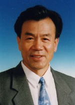

王越，男，生于1932年4月。1956年毕业于中国人民解放军通信学院(现西安电子科技大学)雷达工程系，北京理工大学信息与通信工程学科教授、博士生导师。曾任中国兵器工业第206所所长，北京理工大学校长。雷达与通迅系统专家，1991年当选为中国科学院院士，1994年当选为中国工程院院士。
长期从事电子学与通信领域的科研工作，主要研究方向为复杂信息系统理论。提出并建立了我国电子工程对抗系统的理论体系，主持研制出多部高性能的火控雷达。承担国家自然科学基金重点项目、国防基础科研项目、总装预研项目10余项。研究成果获得1978年全国科学大会奖，1989年国家科学技术进步奖一等奖1项、国家技术发明奖四等奖1项，2001年国防科学技术进步奖一等奖1项、教育部科学技术进步奖一等奖2项。发表论文150余篇，获授权发明专利15项，出版专著4部。
毛二可，男，生于1934年1月。1956年在华北大学工学院(现为北京理工大学)雷达专业获得学士学位，北京理工大学信息与通信工程学科教授、博士生导师。1995年当选为中国工程院院士。 主要从事雷达系统及其信号处理领域的研究，在雷达杂波抑制和新体制雷达方面取得重大科研成果，对我国动目标显示、动目标检测技术、合成宽带脉冲多普勒雷达体制做出了重大贡献。承担了包括国家重大基础预研973计划项目、863计划课题在内的30多项重点科研任务。
曾获国家技术发明一等奖1项、国家技术发明二等奖2项、国家技术发明三等奖2项、国家技术发明四等奖1项。发表学术论文100余篇，其中被SCI和EI收录60余篇。获发明专利授权20余项。2001年获何梁何利基金科学与技术进步奖。
 汪顺亭，男，1935年1月7日出生于辽宁省大连市，籍贯山东省肥城县。 惯性技术与导航设备专家，1995年当选中国工程院院士，北京理工大学教授，中国船舶重工集团第七0七研究所研究员。
汪顺亭院士长期从事舰船惯性导航系统、原理方案和惯性平台研制工作。我国自行研制的舰船用高精度、长寿命、动压马达液浮陀螺惯性导航系统主要完成人，1994年获国家级科技进步一等奖。主持完成了多型惯性导航系统的研制。第一代三型舰船惯性导航系统原理方案课题负责人。第二代舰船惯性导航系统主任设计师。创造性地设计了原理方案，采用双重信息导航方式、三点两组位置误差信息精校准等先进技术，应用符合实际的工程设计方案，解决了"奇点校准"难题，提出提高系统精度和可靠性的新方法－"无监控陀螺的H调制技术"（系统监控），仿真证明可行，有工程实践基础。2001年在北京理工大学从事科研和硕士、博士研究生培养工作，期间承担《惯性/水声组合导航技术研究》、《惯性导航系统工作模式研究》、《水下无人潜器及导航技术》、《极区导航技术》、《舰载机惯性导航系统动基座对准技术》等多项课题的首席技术顾问，发表专利、论文多篇，指导硕士、博士研究生多名。